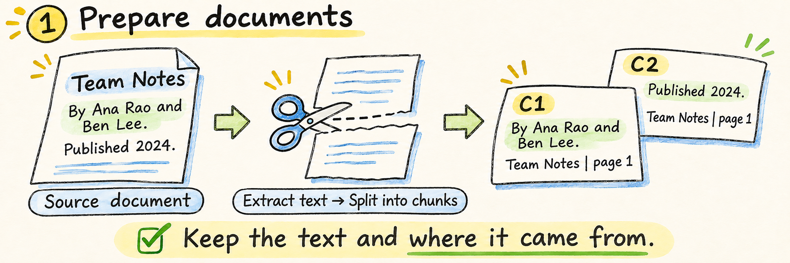
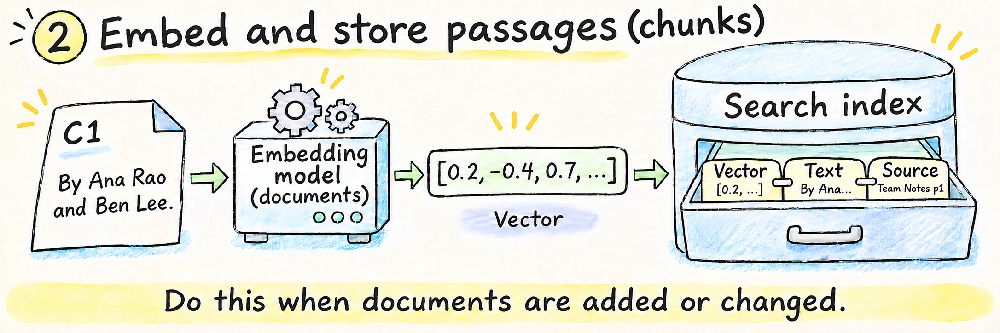
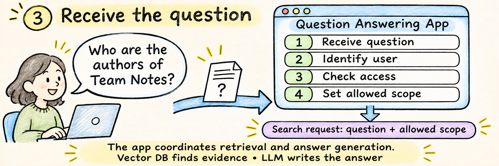
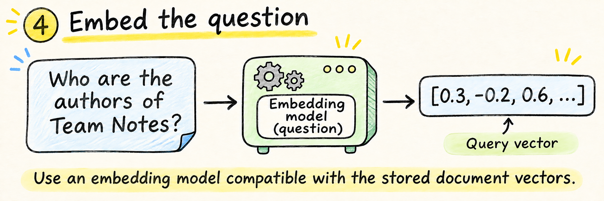
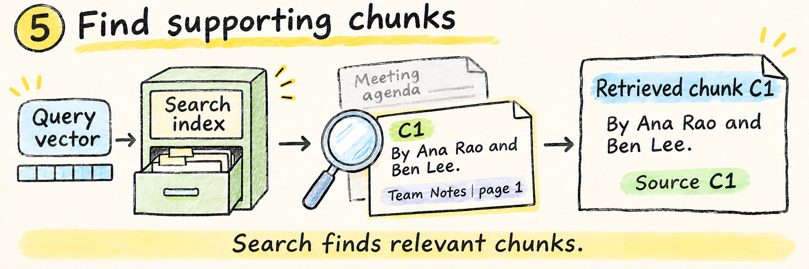
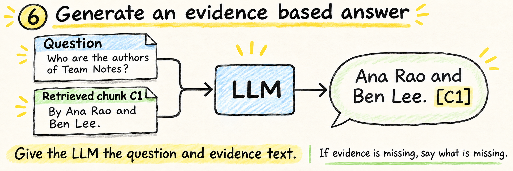
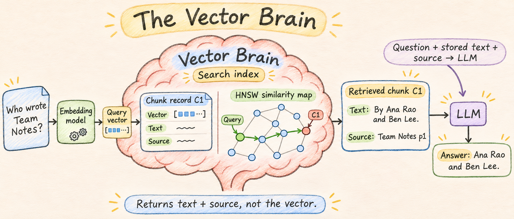
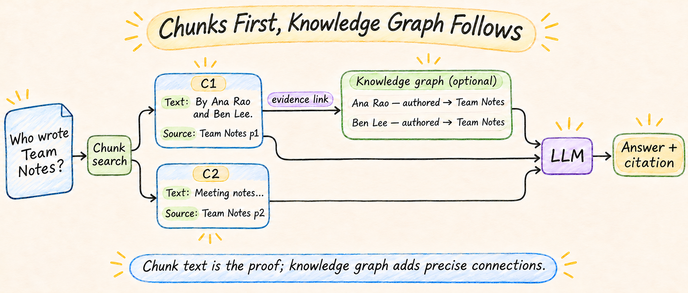

How RAG Works
A visual explanation of document question answering
This guide explains how a question-answering system finds document evidence and gives it to an LLM. Read the pictures from start to finish. The technical guide explains the database indexes and LLM internals separately.
The story in one line
Prepare documents → find supporting evidence → give readable evidence to the LLM → return an answer with its source.
What this guide deliberately leaves out
It does not explain decoder internals, HNSW settings, BM25 ranking, logits, or KV cache. Those belong in the technical architecture guide.
1 Prepare the documents

Extract text, then split it into chunks with source information.
First extract readable text from a document. Then split that text into smaller chunks. Keep the document name, page or section, and other source details so every later answer can show where its evidence came from.
Example: C1 is a chunk containing the byline “By Ana Rao and Ben Lee.” C2 may hold a publication date or another nearby part of the document.
2 Embed and store the chunks

Each passage or chunk becomes a searchable record with vector, text and source.
An embedding model creates a vector for each chunk. The system stores that vector together with the chunk’s readable text and source. The vector helps search; the text is what the LLM reads; the source supports a citation.
This is done when documents are added or changed. It prepares the collection before a person asks a question.
3 Receive and scope the question

The Question Answering App coordinates retrieval and answer generation.
The Question Answering App receives the question and identifies the user. It checks access rules and sets the allowed document scope. It then sends a search request containing the question and the allowed scope.
The app coordinates the workflow. The Vector DB finds evidence; the LLM writes the answer.
4 Find evidence and answer

The question becomes a query vector for comparison with prepared chunks.
The question is represented in a form that can be compared with prepared chunk vectors. The search returns the most useful chunk records with their text and source information.

Search returns supporting chunks such as C1 with readable text and source.
The LLM then receives the original question and retrieved chunk text. It does not receive vectors as evidence.

The LLM receives the question and evidence, then writes an answer.
The Vector Brain

Vector Brain is a teaching metaphor for the retrieval part of the Vector DB and its handoff to the LLM.
“Vector Brain” is an informal teaching name for the retrieval part of the Vector DB. The query vector helps it locate C1. C1 already stores the readable text and source. The system returns that stored text and source; it does not convert a vector back into text.
The Question Answering App combines the original question, the retrieved text, source information, and instructions before it asks the LLM to write an answer.
Chunks First, Knowledge Graph Follows

An optional knowledge graph follows chunk retrieval and remains linked to the source passage that supports each relationship.
Chunk search comes first because chunk text is the proof. An optional Knowledge Graph can then add precise connections, such as “Ana Rao authored Team Notes.” Each relationship should link back to the chunk that supports it.
The complete visual model
Question → scoped chunk search → retrieved text and source → optional verified relationships → LLM → answer and citation.
The separate technical architecture guide builds on this model. It explains how the indexes search, how the LLM generates tokens, and how to operate and evaluate the system.